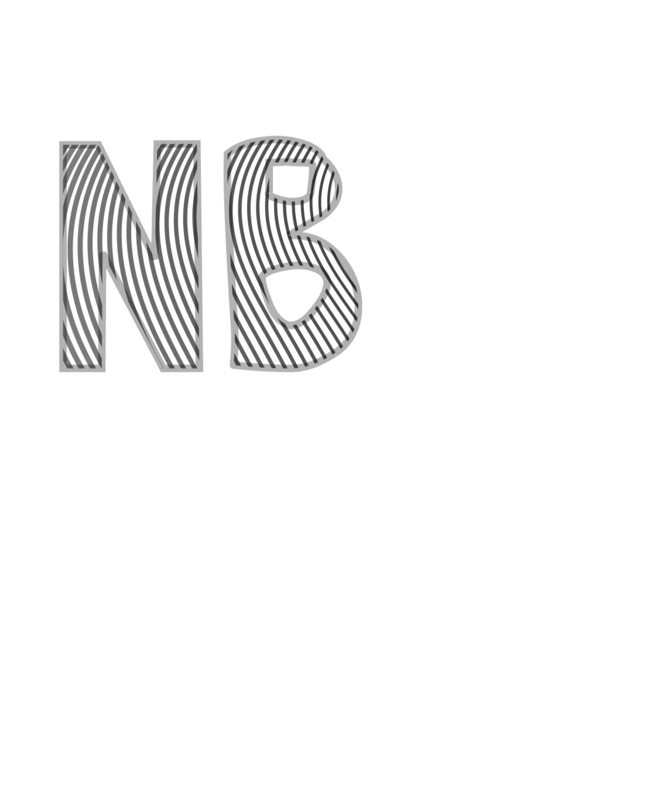

Vježba 1
U 1. vježbi zadatak je bio osmisliti te dizajnirati naš font u programima Fontographer ili FontForge.
Vježba 2
U drugoj smo vježbi trebali iskoristiti font s prošle vježbe, te preko Bezier krivulja ispisati tekst vlastitih inicijala i od njih napraviti masku u Inkscapeu.

Vježba 3
U vježbi 3 trebali smo u Inkscapeu izvesti primjer sa multipliciranim objektima nacrtanima s alatom za crtanje Bezierovih krivulja. Bilo je potrebno koristiti se tehnikama kopiranja, rotacije, scale, transparencije itd.
Vježba 4
U vježbi se obrađuje tema izrade složenih objekata koji se sastoje od više staza metodama spajanja (Unite/Compound path) ili oduzimanja oblika (Difference/Subtract). Apliciranje različitih vrsta gradijenata (linearni, radijalni, mesh) od dvije ili više boja. Transparencija i poredak slojeva u izradi složene grafike.
Projektni zadatak 1
U projektnom zadatku trebali smo spojiti sve tehnike i alate koje smo naučili u prethodnim vježbama!

Vježba 5
U vježbi broj pet upoznali smo se sa radom u Adobe Photoshopu i osnovnim tehnikama retuširanja.
Vježba 6
U vježbi prolazimo kroz tehnike neinvazivnog koloriranja slike koje se može primijeniti na crno-bijele slike ili slike u boji kojima želimo promijeniti nijansu određenih područja.

Vježba 7
U 7. vježbi smo se bavili fotomontažom, selekcijom, maskama i korekcijom boja.
Projektni zadatak 2
U projektnom zadatku trebali smo spojiti sve tehnike i alate koje smo naučili u prethodnim vježbama!
Vježba 8
Ova vježba se bavi osnovama obrade video materijala i uvođenjem multimedije u video projekt. Rezultat vježbe će biti kinemagraf čija je karakteristika spajanje statične i pokretne slike.

Vježba 9
U 9. vježbi smo se bavili uređivanjem video materijala; rezanje i spajanje video isječaka iz više izvora,video efekti, brisanje i dodavanje zvuka te dodavanje i obrada teksta.